Activity1
UMLActivity
Untitled
::
Activity1
Description
none
Diagrams

A5.2 - Diagrama de Atividades (Consultar Transações)
Nodes
InitialNode1
Cliente loga no app do Banco
Tela principal
Tela PIX
Consultar transações
Consultar transações realizadas
Consultar transações recebidas
Cliente sai do app do Banco
DecisionNode1
DecisionNode2
ActivityFinalNode1
Edges
(InitialNode1→Cliente loga no app do Banco)
(Cliente loga no app do Banco→Tela principal)
(Tela principal→Tela PIX)
(Tela PIX→Consultar transações)
(Tela PIX→Consultar transações)
(Consultar transações→DecisionNode2)
(Consultar transações→DecisionNode2)
(DecisionNode2→Consultar transações recebidas)
(DecisionNode2→Consultar transações realizadas)
(Consultar transações realizadas→DecisionNode1)
(Consultar transações recebidas→DecisionNode1)
Não (DecisionNode1→Cliente sai do app do Banco)
(Cliente sai do app do Banco→ActivityFinalNode1)
Sim (DecisionNode1→Consultar transações)
Sim (DecisionNode1→Consultar transações)
Properties
Name
Value
name
Activity1
stereotype
null
visibility
public
isReentrant
true
isReadOnly
false
isSingleExecution
false
Owned Elements
A5.2 - Diagrama de Atividades (Consultar Transações)